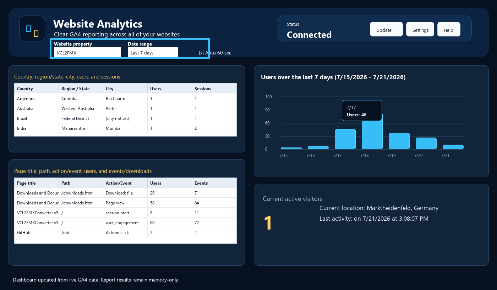

Website and Date Filters

Website property
- The website property combo box controls the GA4 property ID used for the next Update call.
- Reviewing individual properties is the clearest workflow because each property has its own location, page/action, graph, and realtime results.
Date range
- The date range maps to GA4 request dates. Today shows the current day, Last 7 days and Last 28 days show rolling windows, Last 90 days gives a broader pattern, and This year starts on January 1.
- Click Update to fetch immediately, or let Auto update refresh on the next timer interval.